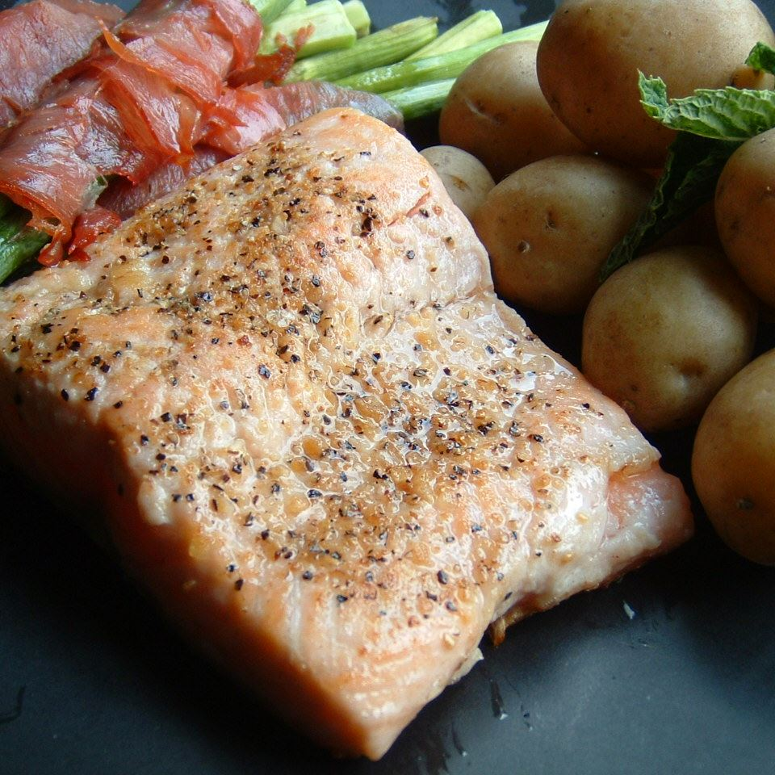

Lemon Garlic Salmon

Fresh Lemon Garlic Salmon
These salmon fillets are cooked in good, sweet butter and minced garlic, and then sprinkled with a little lemon juice
Ingredients:
- 2 tablespoons unsalted butter
- 2 teaspoons minced garlic
- 1 teaspoon lemon pepper
- 2 (4 ounce) fillets salmon
- 1 lemon
Steps:
- Season salmon fillets on both sides with lemon pepper.
- In a large skillet, melt butter over medium high heat. Stir in garlic. Place salmon in pan. Cook for 10 minutes per inch of thickness, or until fish flakes when tested with a fork. Flip fillets halfway through cooking to brown on both sides. Sprinkle with lemon juice before serving.